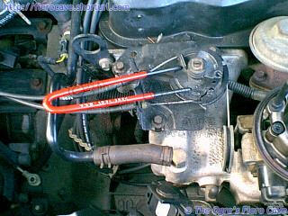

Go Home
Site Map
Go Home
Site Map
The ever popular TH125
There are a bunch of things about the TH125c transmission that need to be kept in mind when working on it. This is a collection of the issues asked about in the forum. It's by no means a complete list of things. It does however cover some obscure things needed by customizers.
Shift Problems
Do the Torque Converter tests in the TC article. What feels like a shift in TH125 could really be the TC locking or unlocking. If there is a problem with the TC lock then it can feel like you've lost a gear. Does the problem happen with the TC lock plug disconnected? (If the TC lockup is working correctly you usually don't notice it at all but do the test anyway.)
When does the problem happen? If it is only one shift/gear then you very likely need a shop to work on it. You can try the stuff below but don't be surprised if nothing helps. If the problem is with all gears, it could be something dumb or major. Check the easy stuff before panicking.
First of all make sure that the transmission fluid is at the right level. Over or under fill will both cause shift problems. What condition is the fluid in? If it's turned light or even clear then it's old, likely oxidized, and you might want to try changing the fluid and filter before taking it for repairs. If it's brown to black or smells different from new fluid then the transmission may have fried a clutch. You could try changing fluid but you should probably take it to a shop to be checked out.
The next item to check is the Throttle Valve Cable, which runs from the throttle linkage on the engine to the top of the transmission. If this cable is binding or out of adjustment you will have shift problems.
Another thing that happens is the Governor or a passage inside the valve body gets blocked with a flake of dirt or sludge. This can affect one shift or the whole transmission. You can try one of the cleaning products that you add to the fluid. Some people have reported good luck with these. Depends on just what's blocking the passage if it will work or not. If this fixes your problem then do a fluid and filter change to get the rest of the dirt out.
Another possibility, although rare, is that the filter has failed or come unsealed inside the tranny. The result is that the fluid is picked up higher in the transmission. This can have the same result as low fluid.
Notes
Shift Kits: These kits WILL NOT fix a transmission with problems. Worse they could hide some problems. Be sure that your transmission is good before adding the kit.
Source of parts and manuals besides GM dealer: Transmission Exchange Co. They have loose parts, full rebuild kits, Trans-Go shift kits, TC lock delay modules and various other things.
The red dye in the fluid will fade over time. It doesn't automatically mean the fluid is bad, just old.
Oil Leaks
Many know that the lower pan and axle seals are famous for leaking oil. Some know that old axle seals could get hard and cause wear grooves on the axles. But many may not know two other problems can leak even when axle seals are new. (Seal install, see axle page.)
- O-ring on VSS can fail and leak, making people falsely think problem with axle or axle seal. If you see passenger side leaks, first check check/replace the VSS O-ring. New O-ring is 20mm inside diameter, 3mm thick.
- Worn-out sleeve bearing inside of transmission can make too much play. TH125 passenger side is good for this. If this happens find a better unit or visit a transmission shop.
Throttle Valve Cable
What does the TV cable do?
The purpose of the TV cable is to tell the transmission what the actual throttle setting is at any given time. TH125c doesn't use a modulator valve so this is the only way it can get some clue about engine load. This cable IS NOT a "kick down" cable/linkage like many people are familiar with. It works with an internal governor to control all transmission shift points.
The TV cable is always synchronized to the throttle butterfly and NEVER the gas pedal position. The transmission doesn't give a rat's ass about the gas pedal. If it is adjusted properly, the car will shift correctly even with a severely stretched cable/linkage between the motor and pedal.
You'd think the gas pedal movement would always equal the same action at the throttle but this isn't always true. Wear and cable stretch often mean the gas pedal movement doesn't match the movement of the throttle butterfly. This is especially the case with the 7-8 foot long accelerator cables used in Fiero.
Adjustment
WARNING!!! DO NOT EVER step on the gas pedal to do this!!!!! Not on Fiero or any other car.
It takes considerable effort to make the TV cable adjuster move. Do Not press the accelerator pedal to make the adjustment or you'll likely damage the throttle cable or other parts in the system, especially in Fiero with it's snake of a cable.... You could even snap the cable. If you try to do the TV cable adjustment by mashing the pedal it will not be right most of the time.
The adjustment procedure for the TV cable is in the Haynes book and is correct for all years. Note however that the location of the adjuster moved on the DIS (87-88) 4 cylinder setups. It is now on the transmission end of the cable. Also, You turn the black pulley the cables are connected to and not the throttle wheel on the TB/TBI.
Once you make sure the TV adjuster isn't stuck etc... Pull the slide part of the adjuster about 1/4-3/8 of an inch. Be careful how far out you pull the adjuster slide. The adjustment button is normally slightly below the edge of the shell. The button MUST NOT be crooked or pop up higher than the shell. If it does then the slide has been pulled out too far. If you try to adjust the cable with the button messed up you'll break something.
For 87 and later L4... Rotate the idler pulley by hand until the TBI unit reaches WOT. There is a mechanical stop on the 700 TBI at WOT. This is much easier if you hold the TBI quarter pulley against the WOT stop then turn the idler pulley until the slack is gone from the small bit of cable between the two pulleys.
As you rotate the idler, the TV cable will ratchet into the tranny. Wherever it stops you are done. (Mine ended up with the fat sliding part about even with the adjuster hole.)
Once the cable has been adjusted, it is possible you may still need to fine-tune it a little by hand. You should not need to adjust the cable more than a couple teeth. If the transmission will not shift correctly after TV adjustment either you did it wrong or there are internal problems.
87+ L4 note:

The idler pulley is bloody hard to turn by hand to make the TV cable adjustment. If you look at the idler pulley you'll see three holes in it. You can make a tool to fit two of the holes or you can go to a bicycle shop and see about getting a special wrench, shown left, that is used for working on the gear packs of 10 speed and mountain bikes. The ends of the bike tool fit the idler perfectly.
4T60 (440-T4) Note
Warning! These transmissions use both a TV cable and a Modulator Valve. Both items must work and be adjusted properly or the transmission will not shift correctly if at all. The modulator must connect to a Manifold Vacuum source.
Proper adjustment of the 4T60 requires a pressure gauge and should be done only by qualified transmission mechanics.
Engine Conversion Note
The TV cable IS NOT optional. These transmissions WILL NOT shift right unless the cable is connected and working properly. On the 4T60 you must connect the modulator to a Manifold Vacuum source.
Again, this cable IS NOT a "kick down" cable! It is used full time to control all shifting. It must move in sync with the throttle butterfly. If you connect it like a "kick down" that only moves at/near WOT then the TH125c and 4T60 transmissions will not shift right if at all.
Adjusting the cable correctly on the TH125c may require a pressure gauge, especially if you have to fabricate parts or extend the cable to connect it. You should not trust the built in adjuster to work by itself for many conversions.
Governor
The Governor Valve is part of the assembly that runs the VSS (Vehicle Speed Sensor) and is used with the TV cable to control shifting. If you've correctly adjusted the TV cable and still have late/no up shifts then this device may be dirty.
If you attempt to repair this yourself be extremely careful! Damaging any part of the governor will screw up shifting. If you damage the springs in any way they MUST be replaced. The springs are calibrated items and the transmission will not shift right if they are out of whack.
If you continue to have shifting problems after cleaning out the governor then you've got internal problems that will require tearing down the transmission.
Fluid & Filter changes.
There is a way to significantly reduce the mess associated with this job as well as get the maximum amount of old oil out of the transmission. I've used it a number of times and it works well.
The transmission will stay oiled well enough to prevent damage but don't take chances. Follow the warnings. This method will get a good amount of the oil normally held in the Torque Converter. The most oil I've gotten out of the Fiero using this method is 6.5-7 quarts of the 9 possible.
Many people say you need to flush out the rest of the old oil. My feeling is that you only need to do that if the old fluid is burnt. If the old fluid is burnt then you likely need other major work done. Flushing is extremely wasteful for most situations.
WARNING! The following procedure can be dangerous. It should not be performed on a hot transmission. Use of proper blocking and jack stands is a must. Do not allow transmission oil to run onto hot exhaust parts.
This is not a GM approved method. There is the remote possibility you can damage the transmission. DO NOT shift the car from park during this operation! DO NOT allow the engine to run once oil flow has stopped. DO NOT GET UNDER THE CAR WHILE IT IS RUNNING!
If you are uncomfortable with this then you could suck the oil out thru the dipstick tube. That will empty the pan but won't get near the same amount of oil out. K-Mart Wal-Mart and others sell a small pump kit for about $10 that should work nicely for this job. (It will also make coolant work much less messy.)
- With the car raised on jack stands and the front wheels blocked. Disconnect the bottom cooler line from the transmission.
- Install a temporary piece of line long enough to reach a catch basin under the car. Make sure the line is aimed so oil can't spray out of the pan. The oil will flow at a small amount of pressure. Anchor the line in the pan so it won't jump out.
- Set the parking brake. If the hand brake doesn't work then someone should stay in the car and hold the pedal tight.
- Start the car and let it idle until oil flow stops. Shut off the car as soon as oil flow stops. A helper to start/stop the engine is a good idea. DO NOT SHIFT THE CAR! DO NOT GET UNDER THE CAR WHILE IT IS RUNNING!
- Let the car stand 5-10 minutes and then repeat step 3 one time.
- Disconnect the top cooler hose and put the bottom line in a jar. Use low pressure, not more than 15-20PSI, compressed air to blow out the lines.
- Reconnect the cooler lines to the transmission. (REPLACE the rubber lines if they are damaged or worn even slightly!)
- Continue with the rest of the filter change procedure. Don't forget to clean the magnet in the oil pan. (Note: Insert the filter bushing in the transmission then insert the filter neck.)
- Take the car off the jacks.
- When filling the transmission pour in 2-3 quarts of fresh Dexron III oil and start the car. Check the dipstick. Pour in more oil until the stick reads just below the full zone. (The oil is cold. You don't want it to be over full when hot.)
- Start the car and let the transmission warm up a few minutes. Put your foot on the brake and shift thru the gears. Check the fluid again. Drive it a block. Go fast enough for the car to hit third. (Don't race!) Then recheck the fluid level one more time. Add more if needed to get the level to the middle of the full zone.
Notes
If the magnet is missing from the oil pan replace it. Any flat magnet(s) 3/16 to 1/4 inch thick will work. (Don't use those thin "refrigerator" sheet type magnets. They aren't very strong.) Just make sure it's near the dimple in the pan used to locate the original magnet. That way it will be out of your way when you put the pan back on. The magnet is part of the oil filtration. It catches the iron flakes generated by the clutches.
When installing the filter put the bushing in the transmission opening THEN push the filter into the bushing. If you try it the other way it won't go.
The filter has changed over the years. Follow the directions included with the filter to alter the support clip on the older transmissions. If you forget this then the filter will obstruct the oil pan. I believe this only applies to 84-85 and maybe some 86 transmissions.
Dexron® Fluid
Dexron III
GM introduced Dexron III in 1995. Per GM literature Dexron III oil replaces Dexron II (and IIE) and is compatible with all GM passenger and light truck automatic transmissions built since 1949. (GM TSB 57-02-91 03-1995)
It provides improvements to a number of characteristics and GM claims it requires no service. On cars that came with it, or freshly rebuilt transmissions, I could believe that but on older cars it should at least extend the service interval, especially in situations where it is likely to have some Dexron II mixed into it.
Yes, this means it is OK to add Dexron III to fill transmissions with Dexron II.
Dexron VI
GM's standard as of 2006 is Dexron VI and is listed as being backward compatible with all GM transmissions using Dexron fluids. Be warned that using this could void warranty or maybe damage other brands of vehicles. While it is rated for nearly all GM vehicles using Dexron that doesn't automatically mean all others can use it. Check carefully.
It should be noted that, as with previous upgrades, DEXRON®-VI fluids are designed to be backward compatible with earlier transmission hardware. ... DEXRON®-VI licensed fluids are fully backward compatible and can be used in all applications covered by earlier GM ATF specifications.
General Motors Dexron-VI Global Service Fill Specification from webcitation.org
Yes, this means it is OK to add Dexron VI to fill transmissions with Dexron II.
How hot should the ATF run?
It should be running around 170-225F according to several sources. One of them is here... Transmission Exchange Co. How does heat affect transmission life?
The Automatic transmission uses a heat exchanger in the radiator intake tank to cool the transmission fluid. The hotter the transmission fluid operates the shorter its life will be. At extreme temperatures the transmission itself will be damaged.
What many people fail to account for is the same heat exchanger makes sure the oil is hot enough to perform properly. With the TC locked many transmissions don't generate enough heat to keep the oil properly hot in cool/cold weather. (This would likely be more of be an issue for long highway runs than city driving.) If you have a trans cooler installed after the radiator you could actually be shortening the life of your transmission because of this.
Transmission coolers
In general the TH125c and 4T60 should not need auxiliary cooling for most applications. However in racing and other heavy loads the stock heat exchanger may need help.
Most people don't understand the function of the OE heat exchanger and as a result incorrectly install the aftermarket coolers. (Yes I know I'm repeating things here.)
The heat exchanger in the radiator is both a cooler and a heater. Transmission fluid must reach and maintain a certain temperature range to work properly. The heat exchanger in the radiator makes sure that this happens even in freezing weather.
The engine coolant will often keep the transmission oil at operating temperature better than the transmission can by itself. Remember that when cruising down the highway, the TC is locked and there's not much shifting going on. Under these conditions the transmission fluid can actually cool off too much to work without the help of the heat exchanger.
When you install an aftermarket transmission cooler, the device is installed upstream of the OE cooler. This insures that the transmission fluid will return to the transmission in the correct heat range.
If you install the aftermarket cooler downstream of the OE heat exchanger, or worse eliminate the OE heat exchanger, then the oil is likely to return to the transmission too cold to properly do it's job. This can be almost as bad for the transmission as running too hot.
If you can't tell which line to alter for the new cooler, disconnect one line from the OE cooler. (Top line is best in Fiero.) Bump the key for a second. If oil pumped from the line that is off then you're new cooler will tap into that line. Otherwise it will tap the one still on the radiator.